画面は大きく分けて、座席表を作る 座席表・設定 タブと、名簿を管理する 名簿管理 タブの2つです。作業は次の5ステップで進みます。
1クラスデータを作る（名簿をコピペ）
- 上部の 名簿管理 タブを開きます。
- 新規作成 ボタンを押し、クラス名 にクラス名（例：3年1組）を入力して 保存 を押します。
- Excelなどで名簿を用意し、範囲を選んでコピーします。列の並びは 番号 / 氏名 / かな / 性別 / 属性1 / 属性2 / 備考 の7列です。
- SekiGaeの貼り付け欄にペーストして、表に反映 を押します。
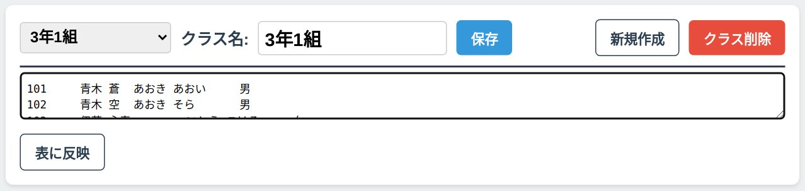
名簿の列は最低限 番号 と 氏名 があれば使えます。男女の色分けをしたい場合は 性別（男・女）も入れてください。かな・属性1・属性2・備考は空欄でかまいません。
| 番号 | 氏名 | かな | 性別 | 属性1 | 属性2 | 備考 |
|---|---|---|---|---|---|---|
| 101 | 青木 蒼 | あおき あおい | 男 | |||
| 102 | 青木 空 | あおき そら | 男 | |||
| 103 | 伊藤 心春 | いとう こはる | 女 |
反映されると、下の表に名簿が入ります。この表はそのまま直接編集でき、行を追加 や行の削除もここでできます。
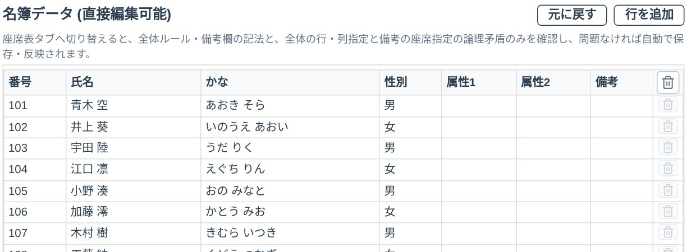
2座席を用意する
座席表・設定 タブの座席表は 6列 × 7行 = 42席 です。画面の下側が教卓側で、廊下 と 窓 の表示で教室の向きを確認できます。
- 使わない席は、タップ（クリック）すると非アクティブ（空席）になります。もう一度タップすると再びアクティブに戻ります。空席は配置の対象から外れます。
- 有効な席数は、右側の 座席 ○席 の表示で確認できます。生徒数と座席数をぴったり合わせておくと、配置が分かりやすくなります。
例として、38名のクラスでは、最後列（教卓から一番遠い列）の左端2席と右端2席、合わせて4席を非アクティブにして、座席数を38席に合わせます。
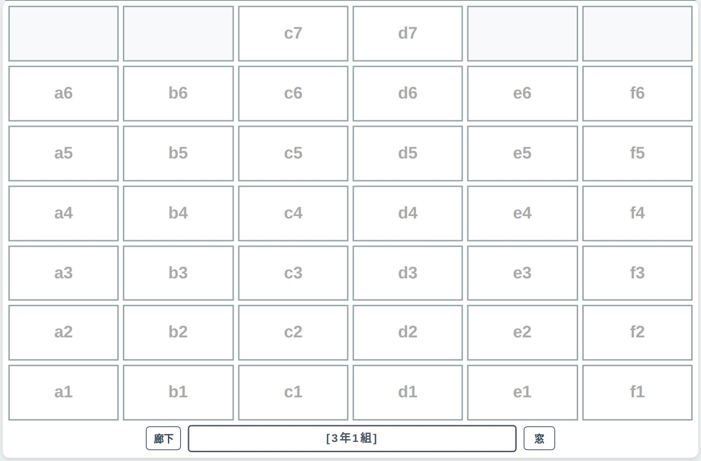
3配置する（番号順・市松・シャッフル）
右側の3つのボタンが配置方法です。どの方法でも、結果はまずプレビューとして表示され、座席を確定 を押すまでは履歴に保存されません。やめたいときは キャンセル を押します。
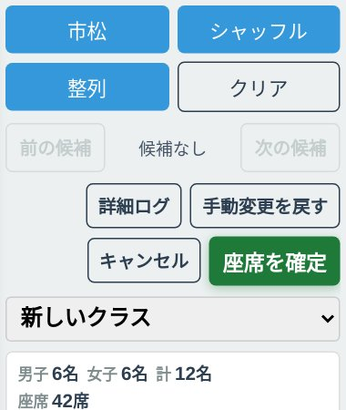
整列 ― 番号順に並べる
整列 を押すと設定画面が開きます。はじめは既定のままで問題ありません。そのまま 整列を実行 を押すと、番号順に座席が埋まります（空席は自動でスキップされます）。
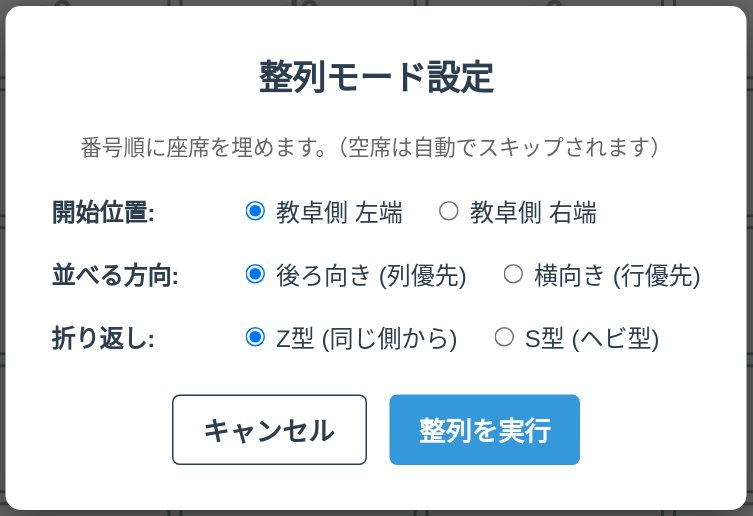
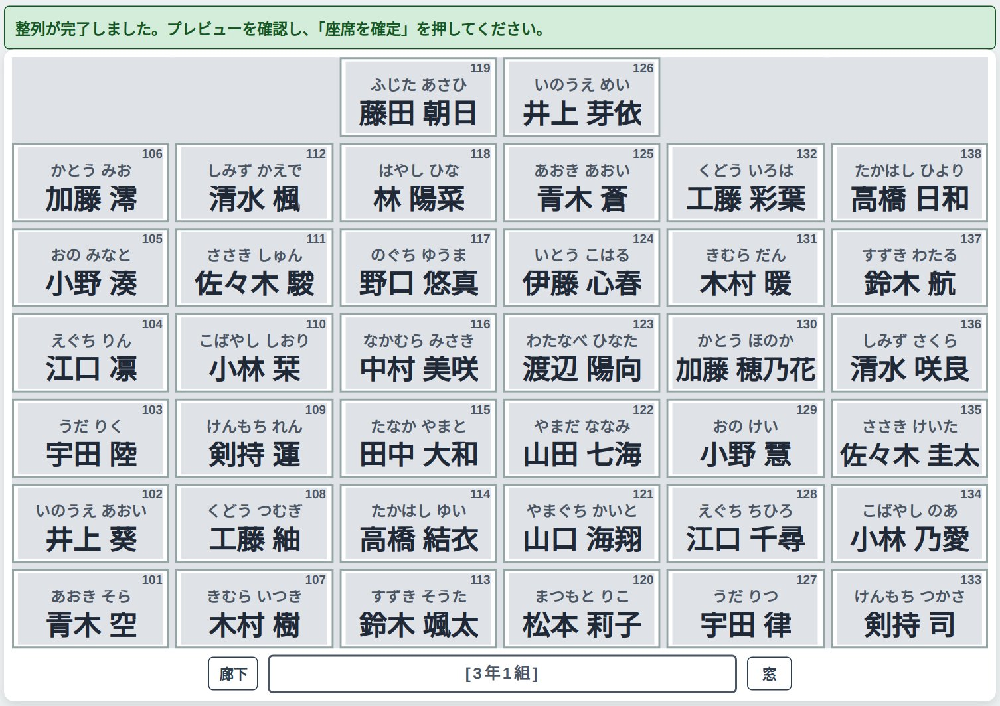
市松 ― 男女が市松模様になるように並べる
市松 を押すと、左上の席（a1席＝教卓側の左端）に入る性別を、2つの枠から選ぶ画面が開きます。配置可能 と表示された枠の この枠で実行 を押してください。
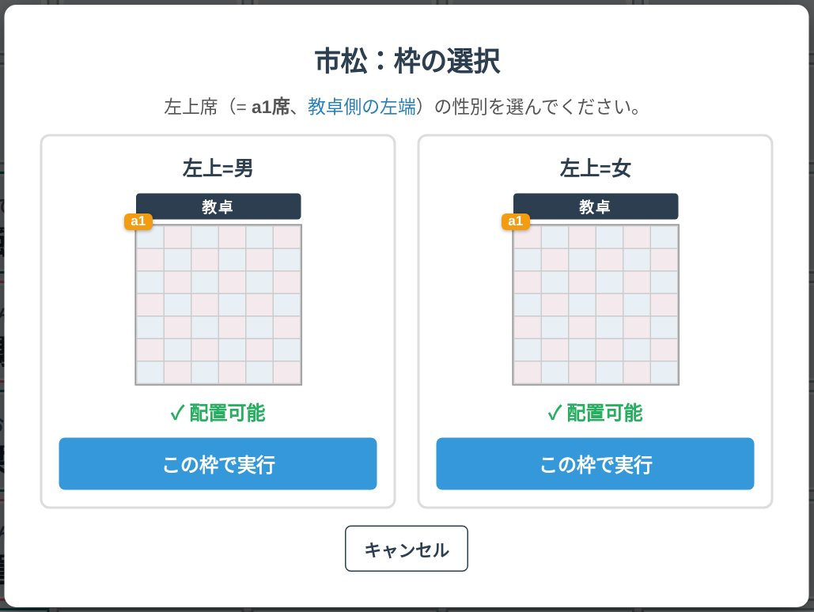
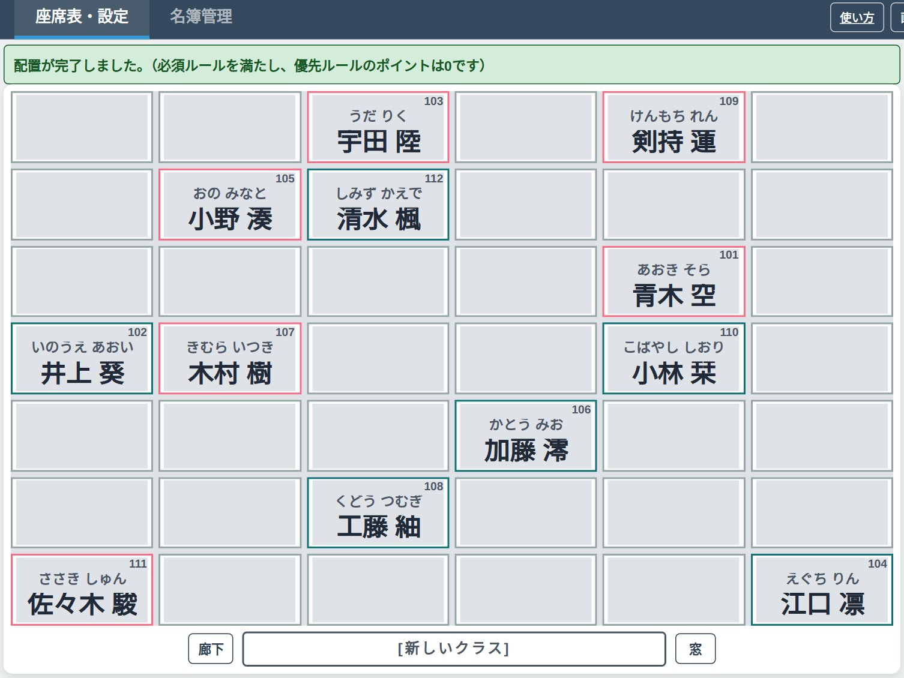
シャッフル ― ランダムに並べる
シャッフル を押すだけで、ランダムな配置が作られます。押すたびに新しい候補が追加され、前の候補 / 次の候補 で行き来して見比べられます（候補の数は 最新 / ○件 のように表示されます）。
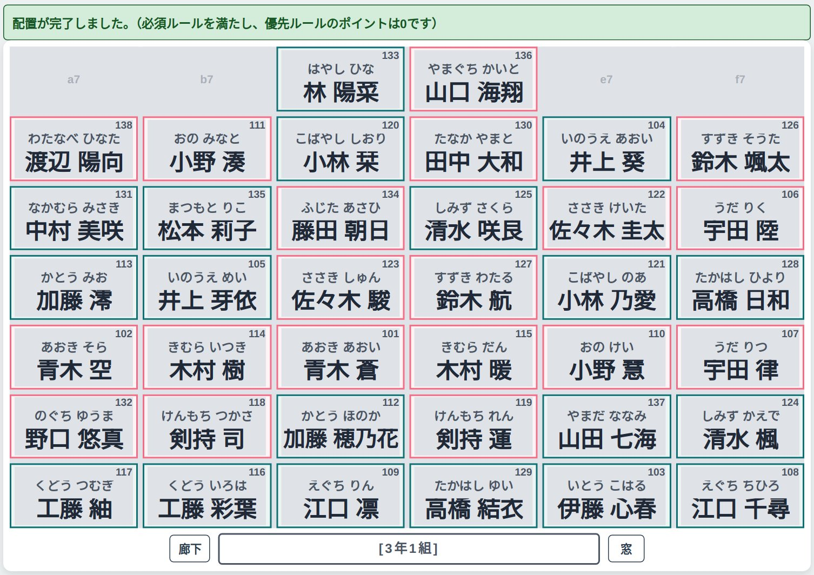
決まったら確定する
- 気に入った配置で 座席を確定 を押すと、その配置が履歴に保存されます。過去の配置は右側の「過去の配置を盤面に復元」から呼び戻せます。
- 確定の前後どちらでも、生徒の席はドラッグで別の席へ動かして入れ替えできます。やり直したいときは 手動変更を戻す を使います。
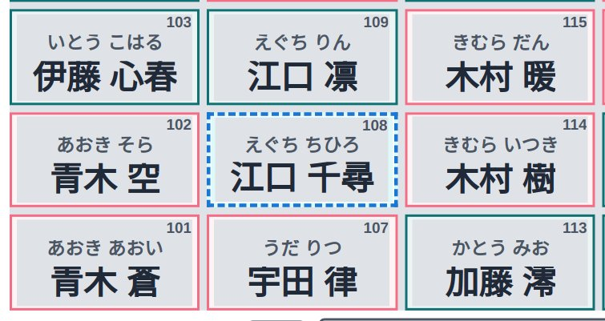
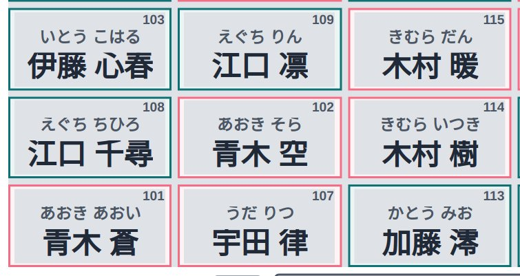
4男女で色分けする
座席に男女の色枠を付けると、座席表が見やすくなります。右側パネルの 色設定 の下にある 色分け の設定を使います。
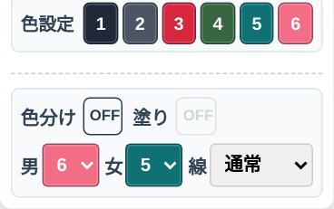
- 色分け の横の OFF を押して ON にします。
- 男 と 女 の欄で、それぞれ色の番号（色設定の1〜6）を選びます。
- さらに 塗り の OFF を押して ON にすると、枠線だけでなく座席全体に淡く色が付きます。
- 枠線の種類は 通常 / 太線 / 二重線 から選べます。
- 色そのものを変えたいときは、色設定 の番号ボタンを押すとパレットが開き、色を選べます。
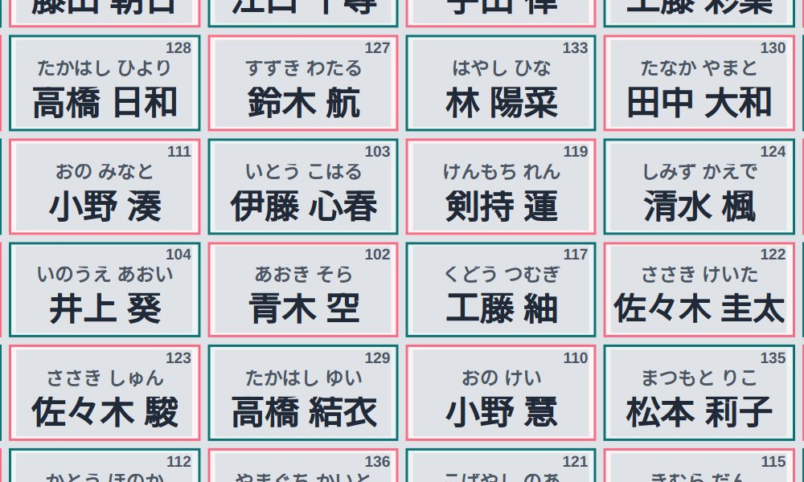
5印刷する
- 右上の 印刷プレビュー を押します。
- 用紙の向き A4縦 / A4横 を選びます。生徒にそのまま見せる座席表なら 生徒視点、教卓から見る並びなら 教員視点 です。
- 空席の表示は 空席 隠す / 空席 枠 で切り替えます。プレビュー右側の色設定では、番号・かな・氏名などの項目ごとに、印刷するかどうか・色・フォントも調整できます。
- 印刷・PDF を押すと印刷ダイアログが開きます。そのまま印刷するか、PDFとして保存してください。
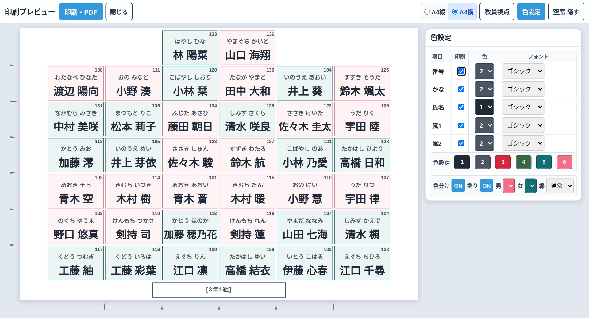
困ったとき・覚えておくと便利なこと
- データはどこに保存されますか？
- 使用しているパソコンのブラウザ内に自動で保存されます。別のパソコンやブラウザでは引き継がれないので、移したいときは 名簿管理 の バックアップ保存 でファイルに書き出し、移し先で バックアップ読込 を使ってください。
- 画面の向きや見え方を変えたい
- 右上の 画面： 横 で縦向き表示に切り替えられます。教員視点 / 生徒視点 は、座席表を見る向き（教卓側から／生徒側から）を切り替えます。
- 座席に表示する項目を変えたい
- 右側の「座席内レイアウト設定」で、番号・かな・氏名・属性1・属性2ごとに、表示と印刷の有無、文字の色、フォント（ゴシック／明朝／丸ゴ／教科書）を選べます。
- 「この生徒は前列に」「この2人は離して」といった条件を付けたい
- 名簿管理 の備考欄や「全体ルール設定（必須ルール）」で条件を指定できます。慣れてきたら使ってみてください。
- 作った座席表をExcelなどでも使いたい
- 右側の「データ・履歴管理」にある 外部座席表用・番号コピー で座席表形式にコピーでき、逆に Excelの座席表を取り込む で取り込むこともできます。